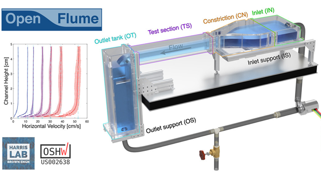

Publications
-
10. Diffusion-limited settling of highly porous particles in density-stratified fluids
R. Hunt, R. Camassa, R.M. McLaughlin, D.M. Harris
PNAS, June 2025
DOI: 10.1073/pnas.2505085122
-
9. FIEVel: A Fast, InExpensive Velocimeter based on an optical mouse sensor
R. Hunt, E. Silver, D.M. Harris
Experiments in Fluids, May 2025
DOI: 10.1007/s00348-025-04027-8
-
8. OpenFlume: An accessible and reproducible benchtop flume for research and education
M. Lewis, E. Silver, R. Hunt, D.M. Harris
HardwareX, Sep. 2024
DOI: 10.1016/j.ohx.2024.e00583 -
7. Interactions and pattern formation in a macroscopic magnetocapillary SALR system of mermaid cereal
A. Hooshanginejad, J.-W. Barotta, V. Spradlin, G. Pucci, R. Hunt, D.M. Harris
Nature Communications, June 2024
DOI: 10.1038/s41467-024-49754-4
-
6. Drag on a partially immersed sphere at the capillary scale
R. Hunt, Z. Zhao, E. Silver, J. Yan, Y. Bazilevs, D.M. Harris
Physical Review Fluids (Editor's Suggestion), July 2023
DOI: 10.1103/PhysRevFluids.8.084003
-
5. SurferBot: a wave-propelled aquatic vibrobot
E. Rhee, R. Hunt, S.J. Thomson, D.M. Harris
Bioinspiration & Biomimetics, July 2022
DOI: 10.1088/1748-3190/ac7863
-
4. Part I: Diffusion-Induced Flows and Particulate Aggregation, Part II: Experiments and Modeling of Replacement Aortic Valves, Part III: Enhanced Diffusion in Wall-Driven Shear Flows
R. Hunt
Ph.D. Thesis, The University of North Carolina at Chapel Hill, Aug. 2021
DOI: 10.17615/zrsp-q361
-
3. Enhanced diffusivity and skewness of a diffusing tracer in the presence of an oscillating wall
L. Ding, R. Hunt, R.M. McLaughlin, H. Woodie
Research in the Mathematical Sciences, Jan. 2021
DOI: 10.1007/s40687-021-00267-2
-
2. Bioprosthetic Aortic Valve Diameter and Thickness Are Directly Related to Leaflet Fluttering: Results from a Combined Experimental and Computational Modeling Study
J.H. Lee, L.N. Scotten, R. Hunt, T.G. Caranasos, J.P. Vavalle, B.E. Griffith
JTCVS Open, Sept. 2020
DOI: 10.1016/j.xjon.2020.09.002
-
1. A first-principle mechanism for particulate aggregation and self-assembly in stratified fluids
R. Camassa, D.M. Harris, R. Hunt, Z. Kilic, R.M. McLaughlin
Nature Communications, Dec. 2019
DOI: 10.1038/s41467-019-13643-y